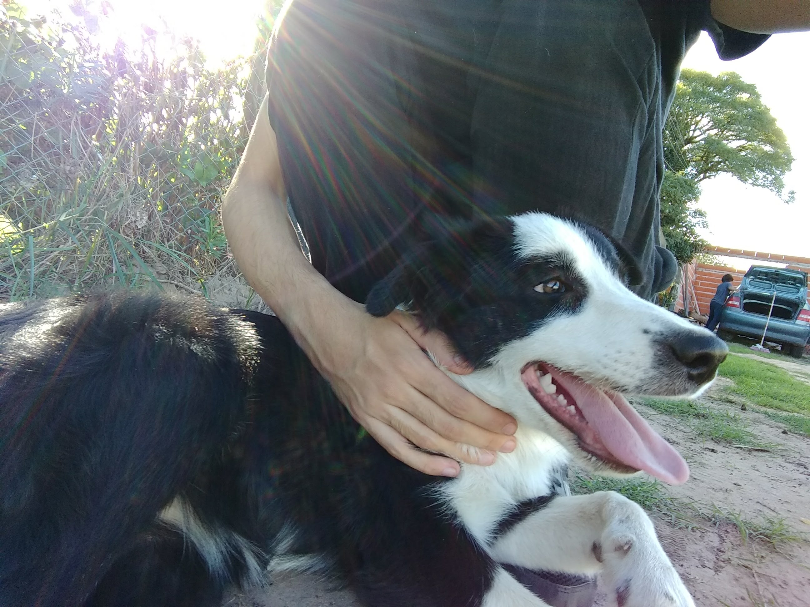
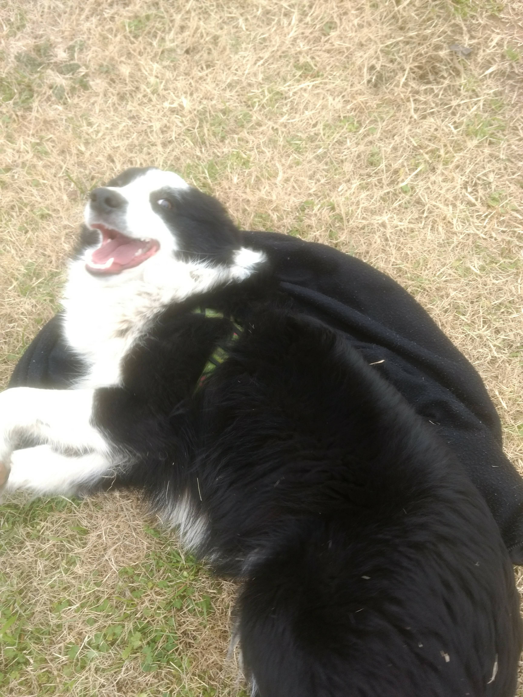
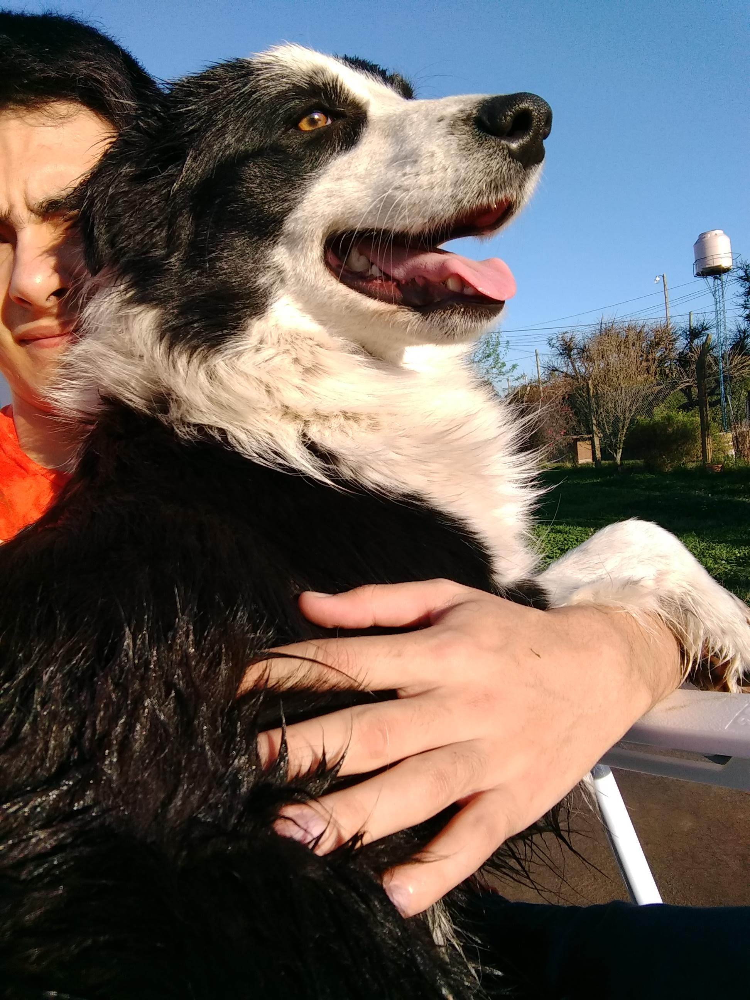
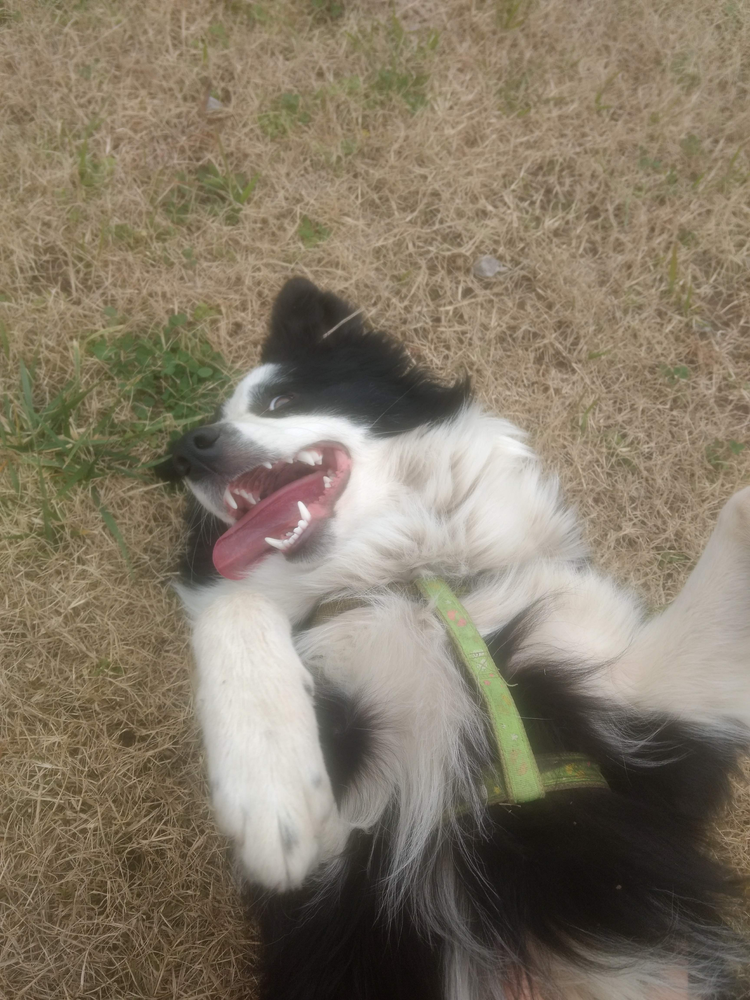
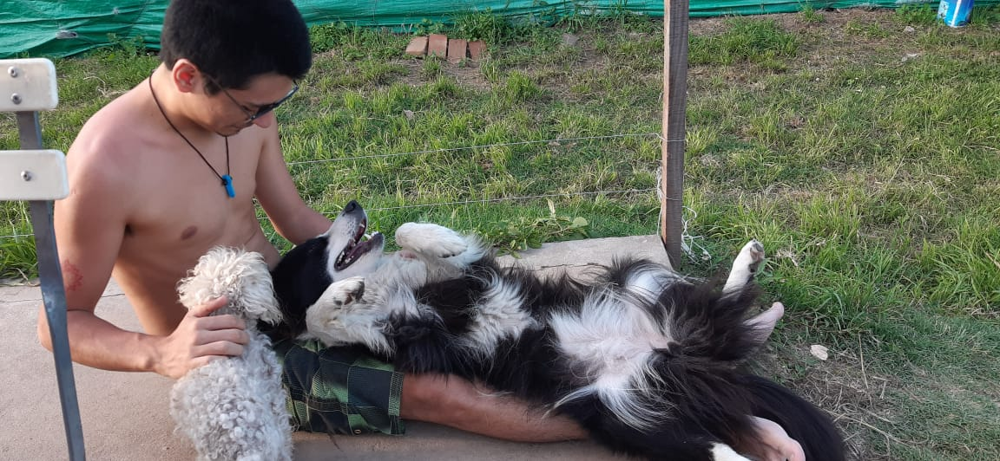

La historia de Cata
En un tranquilo pueblo de la vasta llanura argentina, nació Cata, una inteligente y enérgica Border Collie con sueños más grandes que el cielo nocturno que observaba todas las noches. Desde cachorra, Cata demostró un extraordinario amor por las estrellas y una curiosidad innata por lo desconocido. Mientras otros perros perseguían pelotas en el parque, ella alzaba la mirada al firmamento, soñando con explorar más allá de la atmósfera terrestre.
Con el paso de los años, su pasión por el espacio creció. Cata devoraba libros sobre astronautas, sondas espaciales y constelaciones. Pasaba horas contemplando el cielo estrellado, imaginando que volaba entre las estrellas. Su familia humana la observaba con asombro y cariño, apoyando su fascinación por el cosmos.
Un día, mientras paseaba por el campo, Cata vio algo brillante en el horizonte. Era un extraño objeto metálico que había caído del cielo. Con valentía, se acercó y descubrió una cápsula espacial. Sin pensarlo dos veces, se subió a bordo y, con un impulso de determinación, ¡despegó hacia las estrellas! El viaje fue largo y lleno de desafíos, pero Cata no se rindió. Navegó por la inmensidad del espacio, admirando la belleza de la luna y las constelaciones que siempre había anhelado ver de cerca. Finalmente, llegó a la superficie lunar, convirtiéndose en la primera perra astronauta en pisarla.
Su hazaña fue aclamada en todo el mundo. Los científicos estaban asombrados por su valentía y determinación. Pero lo más importante para Cata era el regreso a casa. Con la ayuda de expertos en viajes espaciales, logró emprender el viaje de regreso a la Tierra. Cuando finalmente aterrizó en su querido pueblo argentino, fue recibida con júbilo y alegría. Cata había cumplido su sueño de explorar el espacio, pero su corazón siempre pertenecería a la tierra que amaba y a las personas que la habían apoyado en su aventura.
Desde entonces, Cata se convirtió en un símbolo de valentía y determinación, inspirando a todos aquellos que soñaban con alcanzar las estrellas. Y aunque su viaje a la luna fue extraordinario, lo más importante para ella seguía siendo el amor y el cariño de su familia humana, quienes siempre la esperaban con los brazos abiertos al final de cada jornada estelar.